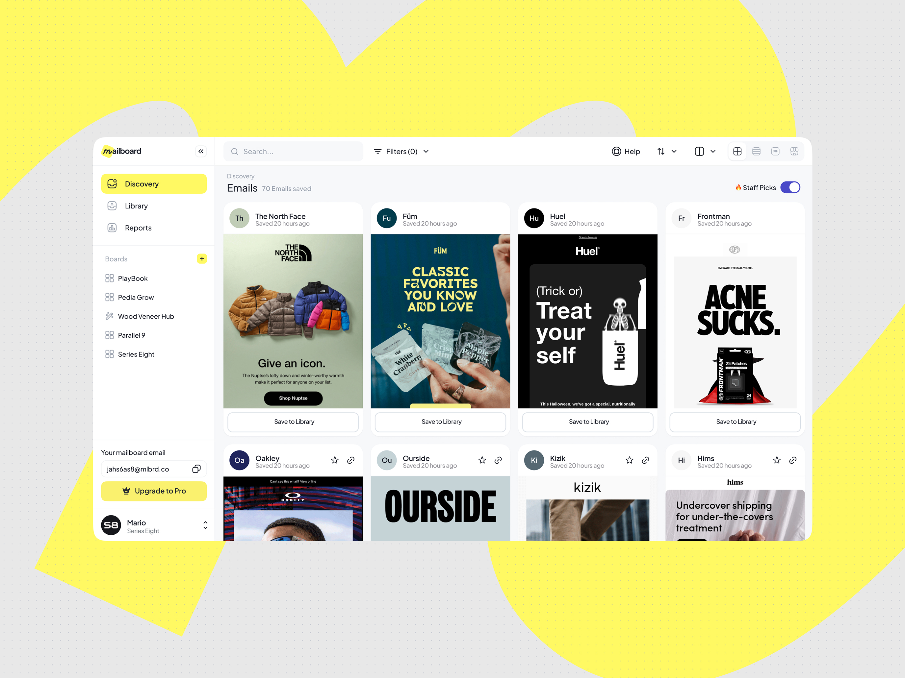
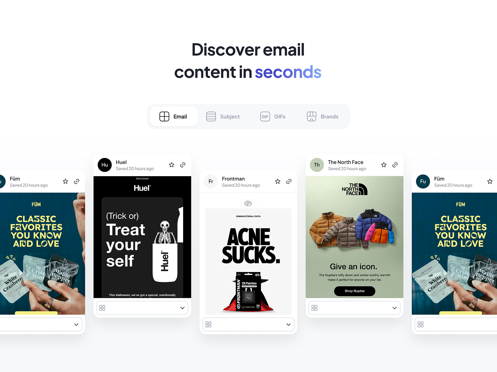
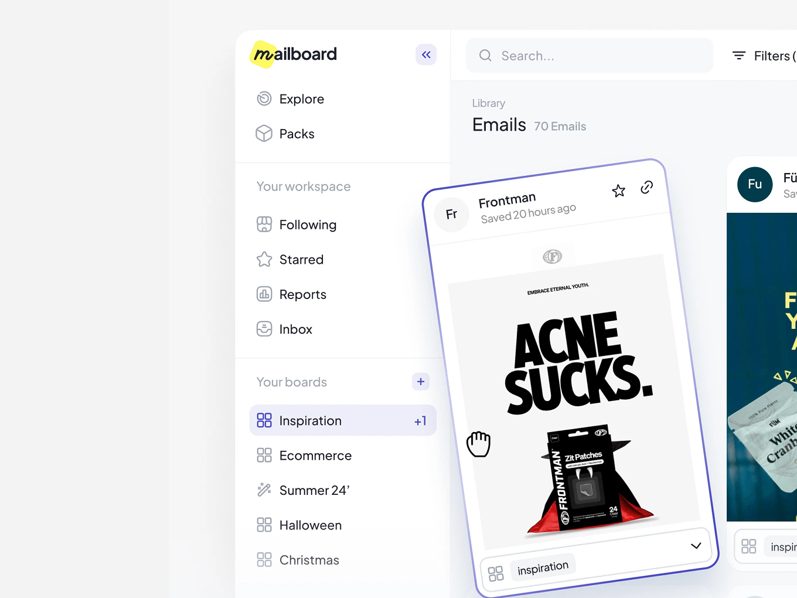
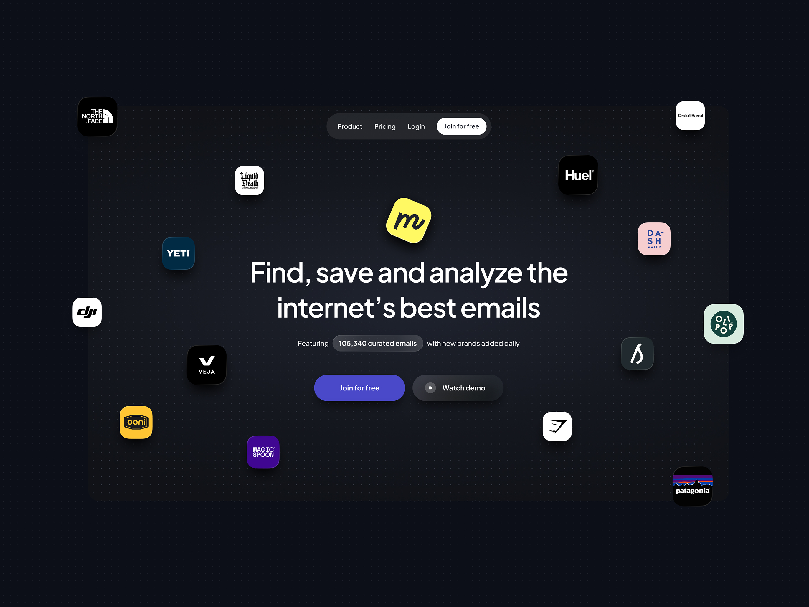
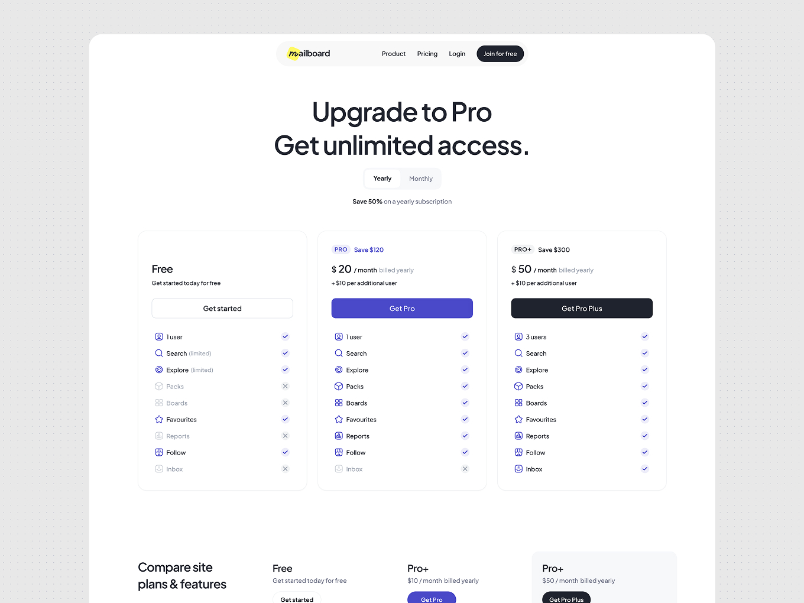
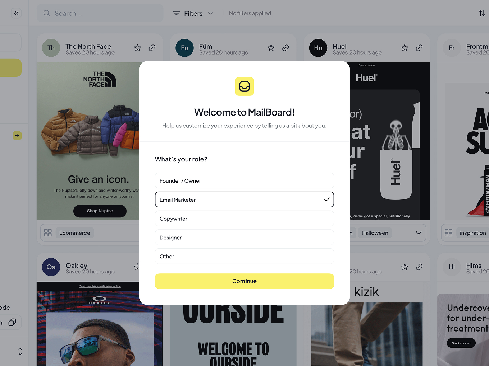
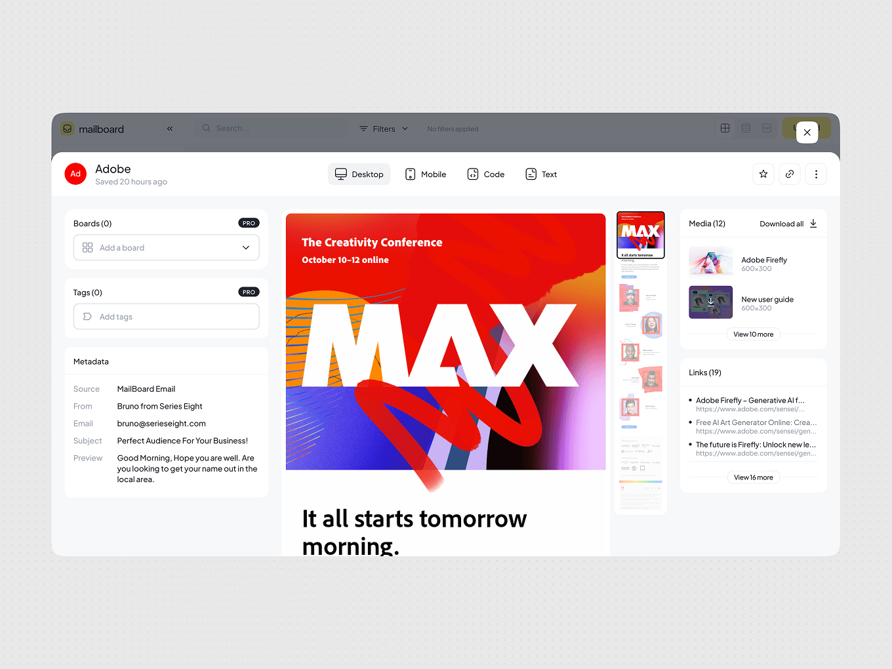
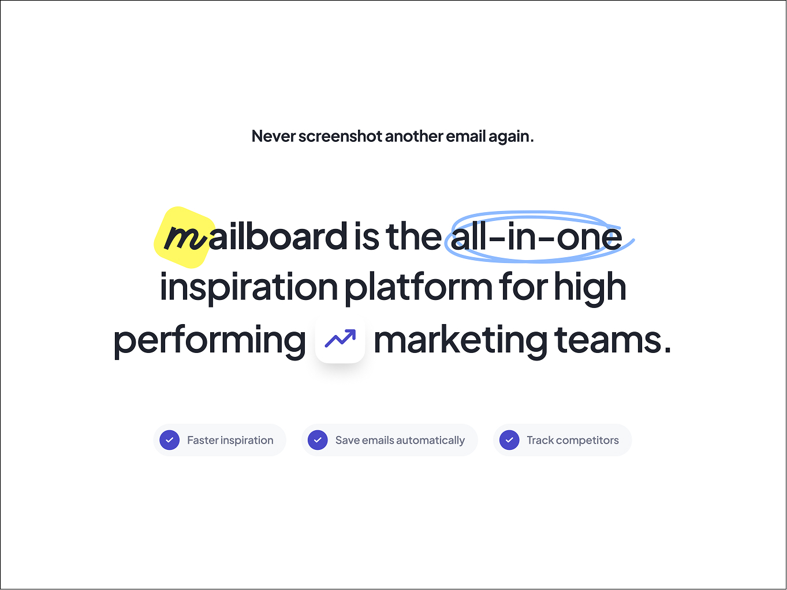

Mailboard
Inbox Chaos to Effortless Inspiration
Mailboard is a tool Series Eight built for itself first: a place to find, save, and analyze the internet's best marketing emails, instead of drowning in screenshots and Slack threads. I directed the design across brand, product, and marketing site, setting strategy and running review and QA across two specialists while staying hands-on throughout. It picked up an Awwwards Honorable Mention and CSS Design Awards recognition within weeks of launch.
Results
- Awwwards Honorable Mention + CSS Design Awards, within 6 weeks
- Email library grew from 700K to 2M+ curated emails
- Adopted by teams at Gymshark, Patagonia, YETI, DJI, Liquid Death
- Named a “go-to” tool by marketers and founders

The Challenge
Every marketer and copywriter on the team, and every client we worked with, was doing the same thing: hoarding screenshots of great emails in random folders with no way to organize, share, or learn from them. Nothing on the market was built specifically for this, tools like Mailcharts and Foreplay existed for ads, not email. Series Eight decided to build the tool itself, which meant designing a brand, a product, and a marketing website from nothing, at a scale that would only get harder as the library grew.


The Approach
The first call was strategic: nobody trusts a brand-new tool over their old screenshot folders unless the brand feels more credible than the problem it replaces. I pushed for a distinctive, opinionated identity rather than the safe SaaS-blue look most tools in this space default to, then set a shared design system so that identity held together across web and product without drifting apart as two designers built in parallel.
On product, the decision I backed was to get out of the way of the content. With a library headed past a million emails, the UI needed to prioritize search, filtering, and a board-based save structure over any kind of visual flourish, so the interface stayed minimal and the emails themselves stayed the focus. That's a deliberate trade-off: usability over decoration, made because the product's whole value is in the content being easy to find, not in the UI showing off.
Running two specialists concurrently meant daily reviews rather than end-of-sprint check-ins, arbitrating the constant tension between brand distinctiveness (where the marketing site and identity needed to stand out) and product convention (where the app needed to just work). On the marketing site, I made the call to lead with recognizable brand logos before any feature explanation, since a tool with no track record needed borrowed credibility before it could ask for anyone's attention.

The Outcome
Mailboard launched to an Awwwards Honorable Mention and CSS Design Awards recognition within weeks. It's since grown into a genuinely used tool in its category, now curating over 2 million emails from brands like The North Face, Patagonia, YETI, Gymshark, and Liquid Death, with real marketers and founders citing it by name as their go-to for email inspiration and competitive research.


Reflection
Mailboard tested my ability to direct a small, senior team through a 0-to-1 brand, product, and website launch at once, and to hold a distinctive point of view without losing sight of what the product actually needed to do at scale. That balance, knowing when to protect the brand and when to protect the user, is something I've carried into every Design Director role since.

